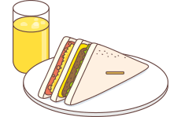
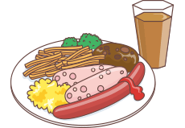
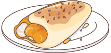
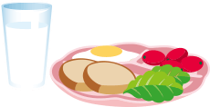

布萊克斯的魔鏡
古人說，三日不讀書面目可憎。
那如果每天最重要的早餐吃得不夠營養
你會變成什麼樣子呢？
嘿嘿！現在就來看看你起床後的樣子吧！
2. 請檢視你的早餐
選出最接近你平常吃的早餐類型/若選擇吃早餐
你會選擇以下哪種早餐？
便利商店
西式早餐店
中式早餐店
自己動手做
油膩膩
忽略早餐重要性，身體會慢慢產生各種小警訊，也是未來慢性疾病的危險族群喔！！！快看看該如何正確吃早餐，開啟活力充沛的一天吧！
習性
健康早餐檢查表
推薦營養素
高品質蛋白質
攝取高品質蛋白質取代加工品，可以幫助一整天的精神活力，並減少過多油脂攝取。
營養代餐以營養代餐取代早餐，幫助控制熱量攝取又有飽足感。
膳食纖維建議多攝取膳食纖維及足量水分，高纖早餐補足，可以讓腸子動起來、解便秘。
綜合維生素/礦物質/植物營養素改善早餐不均衡所造成營養素攝取的問題。缺乏植物性食材如蔬果類、糙米燕麥因此具有抗氧化作用的植物營養素更是不可或缺。
魚油超油膩的早餐組合容易引發心血管疾病的風險，富含omega-3的魚油可以保護心血管抑制發炎反應。
高品質蛋白質
高品質蛋白質攝取可以幫助一整天的精神活力，抑制想要亂吃的衝動，避免一口氣吃進過多份量。
營養代餐以營養代餐取代每天早餐，幫助控制熱量攝取又有飽足感，避免吃過量。
膳食纖維建議多攝取膳食纖維及足量水分，高纖早餐可維護腸胃健康，吃的飽足又健康。
綜合維生素/礦物質/植物營養素改善早餐不均衡所造成營養素攝取的問題。兩餐併作一餐的飲食方式，容易造成身體營養素消耗流失。
高品質蛋白質
高品質質蛋白質為早餐不可或缺的營養成分，足量的優質蛋白質可以幫助增加飽足感避免飢餓作怪而亂吃零食，或午餐過量進食造成肥胖。
營養代餐選擇營養代餐，避免因攝取過多的碳水化合物和精緻糖，導致血糖起伏不穩，一整天頭昏腦脹、老是肚子餓！
膳食纖維建議多攝取膳食纖維及足量水分，高纖早餐有助維護腸胃健康，延長飽足感，讓自己不會一下子感到飢餓。
綜合維生素/礦物質/植物營養素改善早餐不均衡所造成營養素攝取的問題。補足早餐的營養缺口，達到完整營養。
高品質蛋白質
高品質蛋白質是早餐不可或缺的營養成分，足量的優質蛋白質可以幫助思緒清晰、精神飽滿，提升工作效率，開啟一天的活力來源！
營養代餐在早餐裡添加營養代餐，讓早餐營養更為完整，並延緩飢餓、增加飽足感。
膳食纖維攝取膳食纖維及足量水分，高纖早餐維護腸胃健康，讓腸子動起來，解便秘、無負擔。
綜合維生素/礦物質/植物營養素改善自製早餐所忽略營養素不均的問題。補足早餐的營養缺口，達到完整營養。